Hello
I'm
Pranay Tummalapalli
Embedded Software Engineer
Scroll ↓

Hello
I'm
Pranay Tummalapalli
Embedded Software Engineer

About Me
Hey There,
I'm Pranay Tummalapalli, an Embedded
software and control systems enthusiast with around 3+ years of
experience in Medical robotics. I’m deeply Passionate about robotic
control system design and development.
I have worked on a variety of projects from humanoid upper body
limbs all the way to robotic assisted surgery for laparoscopic and
orthopaedic surgery.
I am a classically trained tabla
player and spend my leisure hours hitting the badminton court.
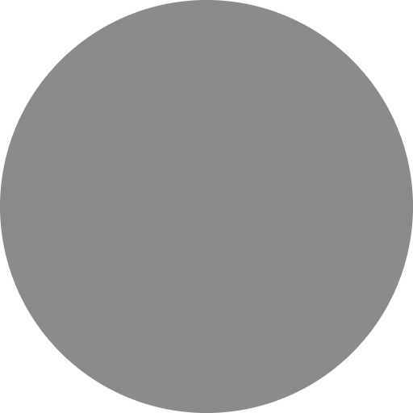
Robot Assisted Surgery
company role
Nov 2023 - Present
IITM Research Park, Chennai, India
Jan 2023 - Nov 2023
Bengaluru, India
Nov 2021 - Jan 2023
Bengaluru, India
Jan 2021 - Oct 2021
New Delhi, India
Feb 2020 - Jul 2020
New Delhi, India

EtherCAT based motor driver for BLDC FOC Control
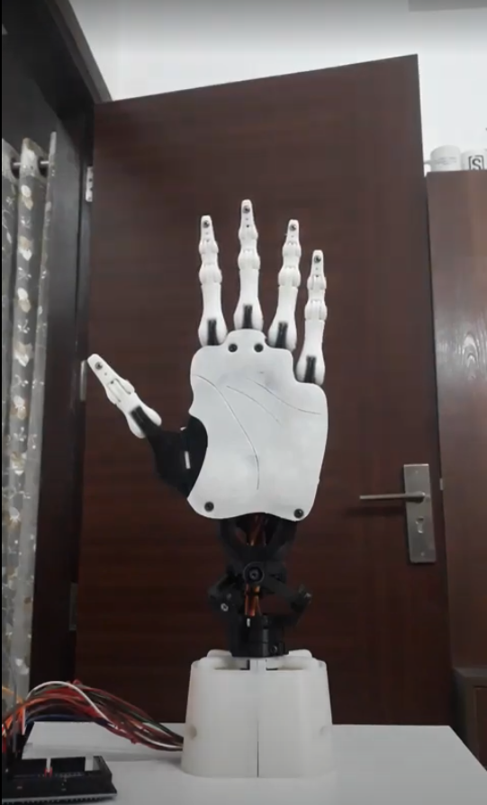
Robotic Hand To Convert Speech to Sign Language
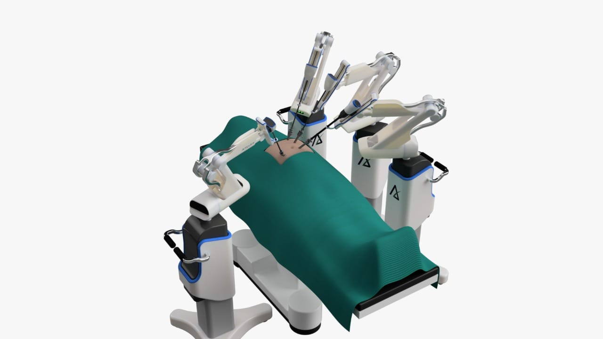
Pulsar Robot Assisted Laparoscopic Surgery
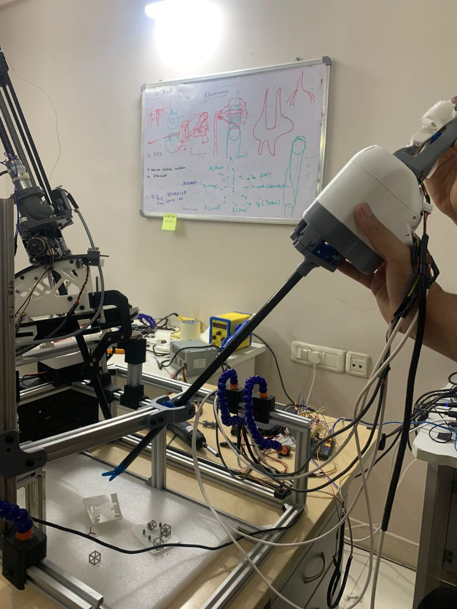
Comet Handheld Robotic Lap Instrument
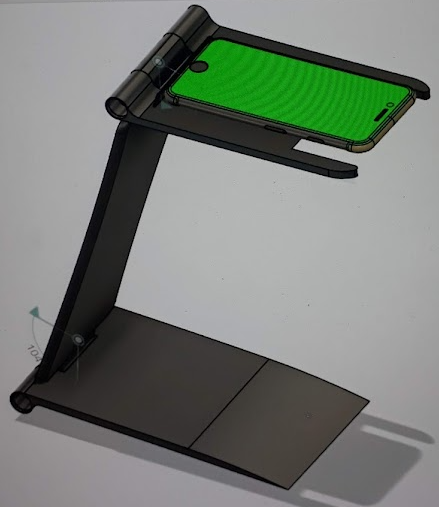
Kibo Reader For Visually Impaired
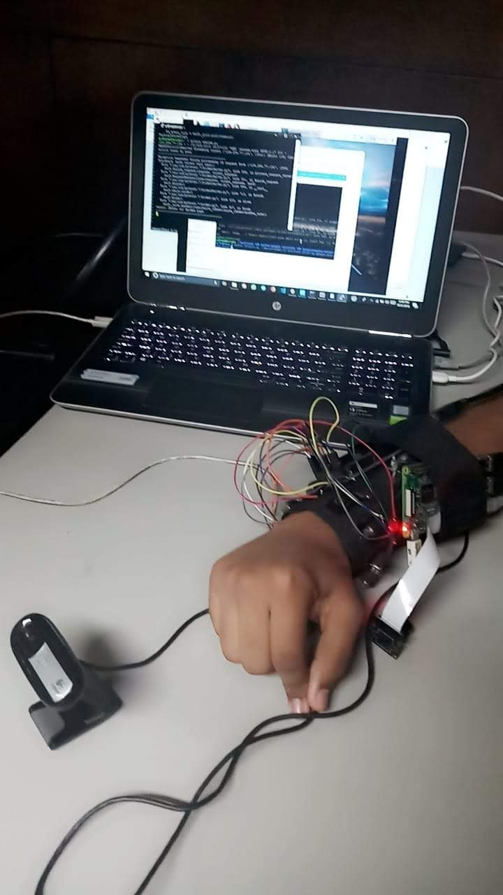
Project Raah - Assistive object interaction
Best student award for Electronics and Communications Engineering Dept
Academic award
1st Position, Hardware Productathon, E-Summit 2020, IIT Roorkee
Project PriorFire - LoraWAN based sensor network for accident prevention
1st Position, Smart India Hackathon Hardware Edition 2018 (Drones and Robotics Track, IIT Kanpur)
Project Lingua - Akshar Bionics.
Project funded by Ministry of Education, Govt. Of India
1st Position, Technical Projects Exhibition, IEEE-MSIT
Project SSDr - Safety and Surveilance rover for disaster affected zones.
2nd Position, Technical Projects Exhibition, Fervour X, BVPIEEE
Project SSDr - Safety and Surveilance rover for disaster affected zones.
Bachelors, 2017 - 2021 Bharati Vidyapeeth’s College of Engineer, New Delhi
Best student award for ECE dept.
I completed my Bachelor of Technology in Electronics and Communications at Bharati Vidyapeeth’s College of Engineering, New Delhi, from August 2017 to July 2021.
During my time there, I was honoured to be named the Best Student in my department and was presented with an award.
My college experience was marked by a strong focus on innovative projects, such as creating a robotic arm using biomimetic design methodologies and developing assistive technologies for visually impaired users. I also gained valuable practical experience through internships and co-founding a startup centered on robotics, showcasing my commitment to applying my skills in real-world settings
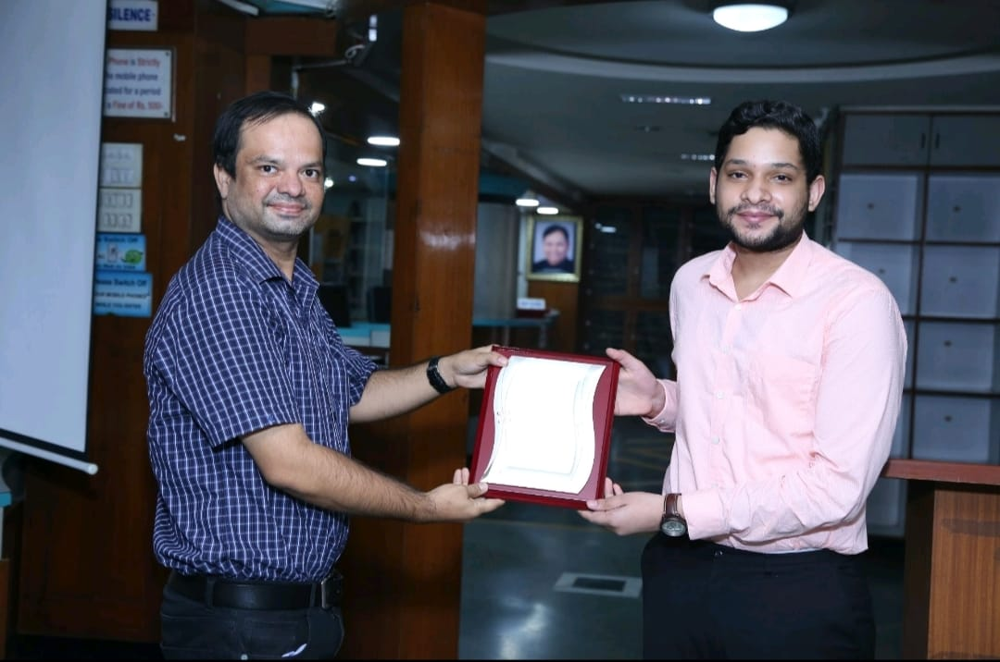
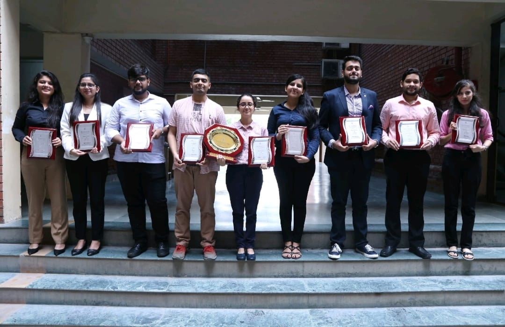
Student Organisation Associations - Bachelors
During my bachelors i was a part of Developer Students Club (DSC-BVP) and IEEE (BVP-IEEE). In DSC, i joined as a student volunteer but soon after served as the Tech Lead for the Robotics and Intelligent Systems Chapter (RNIS).
I joined DSC-BVP in 2018 as a student volunteer in my 2nd Year of
college. During my volunteership at the organisation, I mentored 1st
year students on the Fundamentals of Robotics over the course of a set
of four interactive workshops that taught hands-on foundational
robotics skills such as basic electronics, introducton to c for
Arduino, sensor interfacing with arduino and basics of motor control.
Soon after, in June 2019, I was appointed as the co tech lead for the
Robotics and Intelligent systems (RNIS) chapter of the organisation. I
contributed towards the formation of the curriculum for the yearly
Fundamentals of Robotics course that first year students undergo.
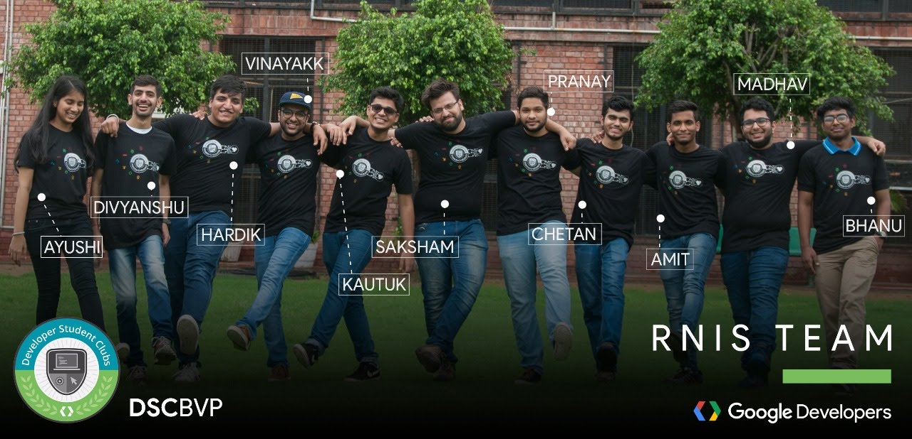
I also mentored the RNIS team members student-led robotics projects. The most notable one were Spider-crawl gait walking for quadrupeds
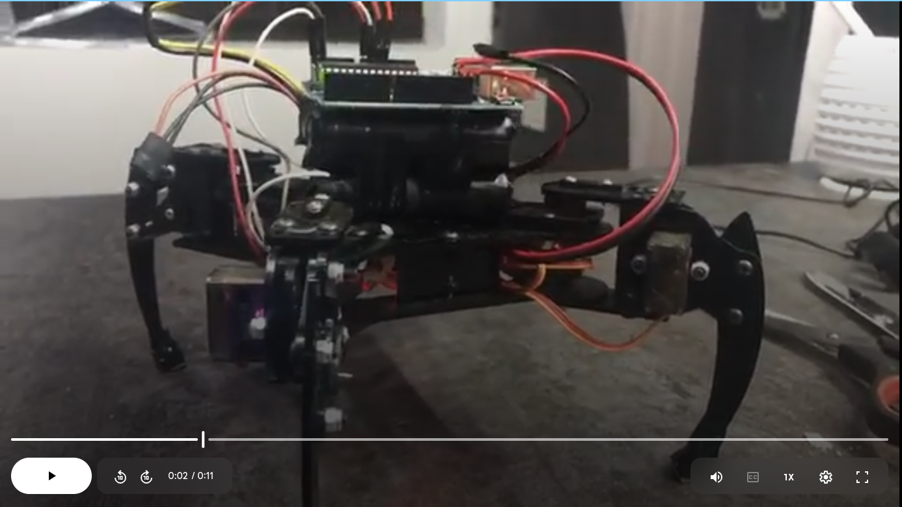
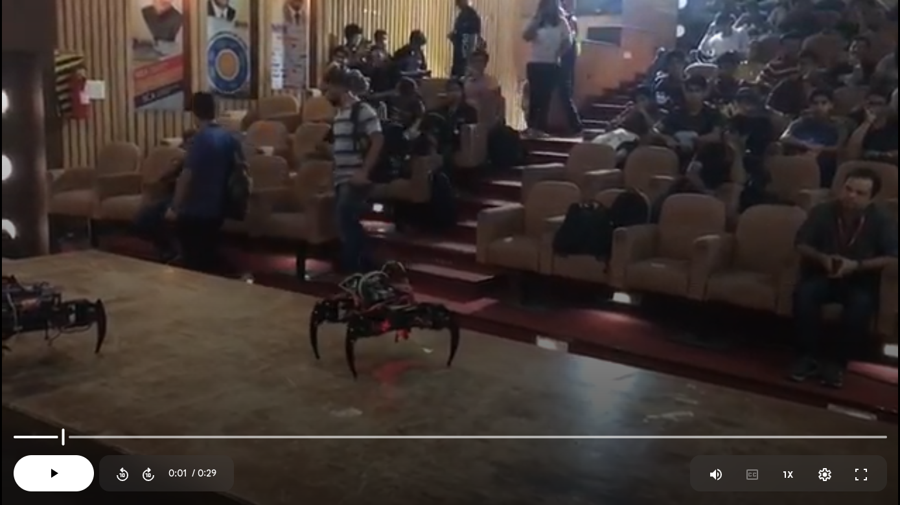
2015 - 2017 G.D.Goenka Public School, Dwarka, New Delhi
School topper (Science) - 94.25%
I completed high school at G D Goenka, Dwarka, New Delhi scoring 94.25% in the CBSE board exams with a focus on Science, including Physics, Chemistry, Mathematics, Biology, and English.
During my high school, i played Badminton at the Inter-zonal level, and achieved 3rd position in Tabla solo instrumental at the Zonal Level.
Social Work
Contribution Towards Society
In my journey as a socially conscious engineer, I have combined technical expertise with a commitment to impactful social work.
My projects focus on addressing real-world challenges faced by under-represented communities. Notably, I developed assistive technology to aid the visually impaired, aiming to enhance their independence and improve daily experiences. Additionally, I designed a robotic hand capable of converting spoken language into sign language in real-time, bridging communication gaps for the hearing-impaired community.
Through my contributions to various social organizations and my technical innovations, I strive to create meaningful, inclusive solutions that empower individuals and promote accessibility in society.
Inclusive education for the hearing-disabled
In January 2021, I co-founded Akshar Bionics with five teammates to bridge learning gaps for children with hearing disabilities. We developed a robotic hand that translates spoken words into sign language in real time, supporting inclusive learning in classrooms.
Our journey began in 2018, when we won 1st place at the Smart India Hackathon Hardware Edition at IIT Kanpur. With a grant of INR 10 Lakhs from the Ministry Innovation Council, we advanced our prototype using 3D printing, creating a modular arm with potential for prosthetic applications. This project strengthened my skills in mechanical design, embedded software, and robotics, laying the foundation for my engineering approach.
Akshar Bionics →
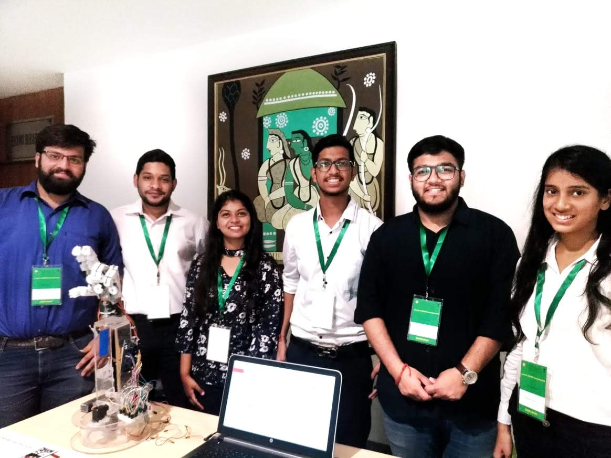
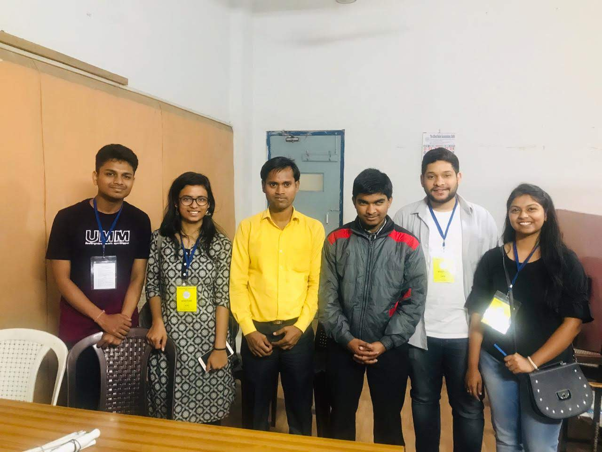
Wearable device to assist visually impaired with object interaction
Project Raah was designed to assist visually impaired individuals with object localization, recognition, and interaction through an innovative wrist-wearable device equipped with a camera. This device aimed to help users identify and interact with objects in their surroundings more independently.
Our team collaborated closely with the Blind Relief Association and Blind Welfare Society in Delhi, engaging with visually impaired individuals to understand their daily challenges and adapt the design accordingly. This experience was crucial in shaping a solution that was practical, user-friendly, and truly beneficial to the community it was designed to serve.
Project Raah →
City Cleanliness Drive - Swachh Bharat Mission, National Service Scheme
In 2018, as part of the National Service Scheme, I actively contributed to the Swachh Bharat Mission, supporting efforts to promote cleanliness and hygiene in local communities. This experience allowed me to be part of a national initiative and make a meaningful impact through hands-on service.
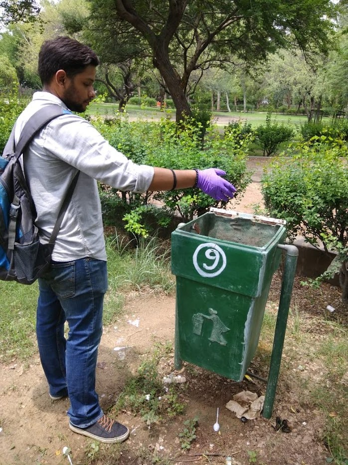
Co-Curricular Activities
Throughout my school and college years, I have actively participated in co-curricular activities.
I represented G D Goenka, Dwarka, at the zonal level for Tabla instrumental solo and secured 3rd position. Additionally, I have performed solo Tabla pieces at multiple venues, refining my musical skills.
Beyond music, I have been passionate about badminton since the age of 9, representing my school at the inter-zonal level and playing in the CBSE North Zone tournament. Badminton has been an essential part of my physical and mental well-being.
I have also learned to play the Harmonica and occasionally enjoy playing blues music, further diversifying my creative outlets.
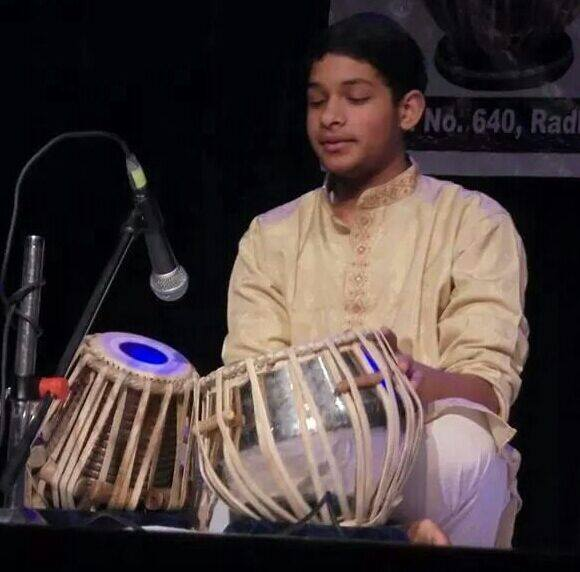
Tabla, Instrumental
I have been learning classical tabla since the age of 8, under the guidance of my guruji, who belongs to the Farukhabad gharana, one of the six main gharanas in Hindustani classical music.
My training follows the traditional guru-shishya parampara, where knowledge is passed down orally. Over the years, I have performed in several auditoriums, showcasing my skills in classical solo instrumental tabla. I secured 3rd position in the zonal-level competition in Delhi for tabla solo instrumental, which was a significant achievement in my musical journey.
Badminton
In 2018, as part of the National Service Scheme, I actively contributed to the Swachh Bharat Mission, supporting efforts to promote cleanliness and hygiene in local communities. This experience allowed me to be part of a national initiative and make a meaningful impact through hands-on service.
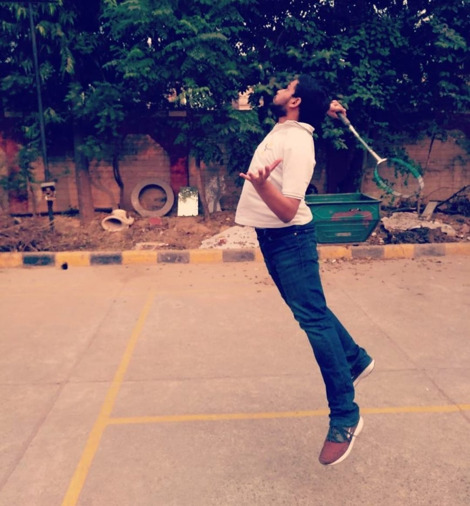